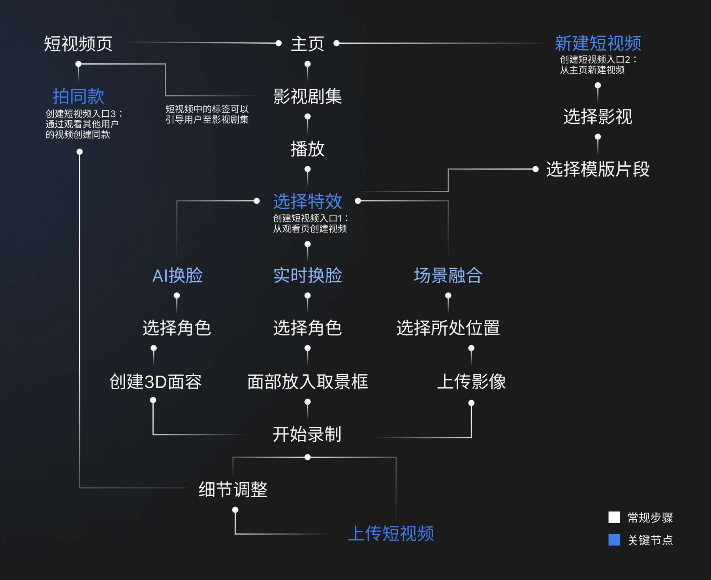

SKY GO 短视频创作
为英国流媒体平台 Sky 设计的短视频创作链路——让看剧的人成为创作者。
团队在我进入之前已经做过第一版创作功能：只有一个从主页新建的入口，创作和看剧是并排的两件事，也还没有 AI 换脸这类玩法。这一轮我们要往前推一步——新增两个入口，让创作能从观看里自然长出来。而我接手的，恰恰是第一版就已经存在的那条主页创建链路：它不缺功能，缺的是结构。
看剧的人想创作，但路太长
目标用户是 Z 世代的流媒体重度用户。他们看完一部剧后有两个诉求：想看到别人围绕这部剧做的衍生内容，也想自己做一条——但前提是「这件事得足够容易，人人都能发」。对着第一版走一遍流程，问题集中在三处。
我们在为谁设计
目标用户锁定 Z 世代——1990 年代中后期到 2010 年代初出生的这一代人。他们不是把「看剧」当终点的观众，而是习惯了在内容周围二次表达的一代。
我接手时的第一版
要说清楚这一轮做了什么，得先说清楚起点。第一版已经能创建短视频，但它把「创作」当成一个独立功能塞在主页里，跟用户正在看的内容毫无关系；而进去之后的那条路，问题不在缺功能，在于组织方式。
images/skygo-v1-original.png
第一版从主页新建视频的完整链路，以及我在走查时标出的问题点。
- 只有一个创建入口——从主页新建，观看页里没有任何创作的口子。
- 没有 AI 换脸这类玩法，用户没法把自己放进剧情里。
- 特效被切成「Deep Fake / Real Fantasy / Reels」三套各自独立的场景，入口分散、逻辑还不一样。
- 编辑是相机优先的：像 Instagram、抖音那样鼓励用户举起手机现拍。
- 整条流程冗余，走完要经过好几个功能重叠的页面。
- 特效命名让人猜不到下一步：「Deep Fake」「Real Fantasy」这些词没告诉用户点进去会发生什么。
- 点击「创建视频」缺少视觉反馈，用户不确定自己有没有点到。
- 内容选择页吸引力不足，是一个纯列表，看不出可以拿它做什么。
- ICON 设计不统一，同一屏里的图标风格对不上。
把观看和创作接成闭环
三条措施合起来是一个环：在观看页触发创作，用简易编辑器完成合成，发布时标注剧集 Tag，这条视频又回到剧集页面被下一个人看到——看剧的人变成创作者，创作的内容再把人带回剧集。
images/skygo-loop.png
观看剧集 → 合成 → 发布 → 观看短视频 → 回到剧集
三个入口，一条主干
这一版把创建入口从一个扩到三个。但三个入口不是三条各自为政的路——它们是同一条流水线上的三个切入点，切在哪里，取决于用户进来时系统已经知道多少上下文。这条串联架构是我在这个项目里的主要产出。

完整使用流程：三个入口分别切入「选择影视 → 选择模版片段 → 选择特效 → 录制 → 细节调整 → 上传」这条主干的不同位置，最后汇于同一个发布步骤。
images/skygo-flow.mp4
手机、平板、桌面三端都做了
SKY GO 不只是一个手机 App。同一套创作与观看体验要在三种断点下都站得住——平板端横屏观看时把编辑入口收进顶部图标栏，桌面端则展开成完整的网页布局，播放器、剧集选集与热门短视频并排陈列。


我重做了什么
我负责的这条链路在第一版里已经存在，所以我的产出不是「多一个功能」，而是把三套割裂的特效场景重新组织成一条线：统一入口、按内容而不是按技术命名步骤、把编辑器换成贴合影视片段的模型。下面两组对比是其中判断成本最高的两处——它们看的不是执行，是为什么第一版看起来没错、对这个产品却是错的。
视频编辑界面
skygo-edit-before.png
skygo-edit-after.png
内容模式不同，就不能照抄交互第一版沿用了 Instagram、抖音那套「举起手机拍」的记录式设计，把即时拍摄放在最显眼的位置。但 SKY GO 的内容基础是影视片段，不是用户自己的生活——素材本来就在 App 里，让人举起手机反而走错了方向。所以我把即时拍摄按钮挪走，整合功能，做成一个围绕已有片段的简易编辑器。
影视剧集详情界面
skygo-detail-before.png
skygo-detail-after.png
把终点改成枢纽第一版的详情页只装影视本身的信息：评分、剧集、演员。它是一个终点——看完就没有下一步了。改版把短视频和剧集信息并置，拆出 Episodes / Comments / Clips 三个分栏，用户可以从详情页直接进到衍生短视频。详情页从终点变成了枢纽，闭环也是在这一步真正合上的。
视觉规范
沿用 Sky 的品牌蓝并向暗色环境适配：深色底保证影视画面是屏幕上最亮的东西，蓝色只用在可操作元素上，让「哪里能点」在一片剧照里始终清晰。
skygo-type.png
复盘与局限
这个项目没有上线，也就没有任何数据能证明这些判断是对的。与其在这里放一组不存在的指标，不如把缺口写清楚——以及如果重做一次，我会先补哪几件事。